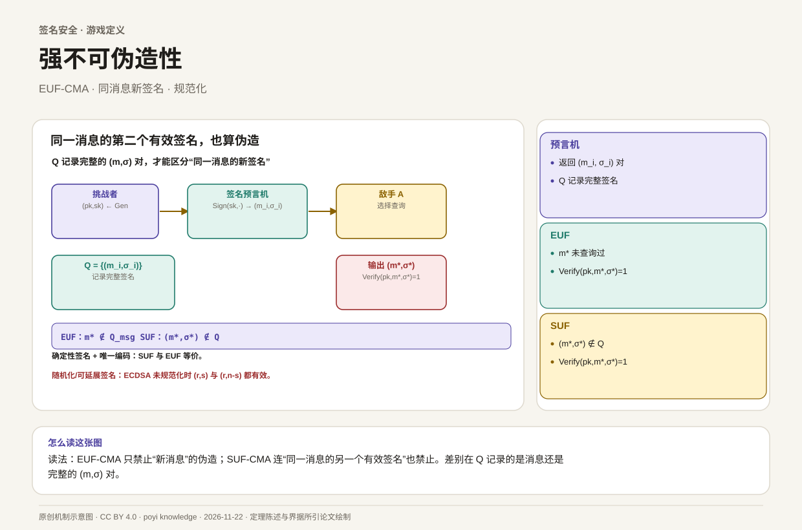
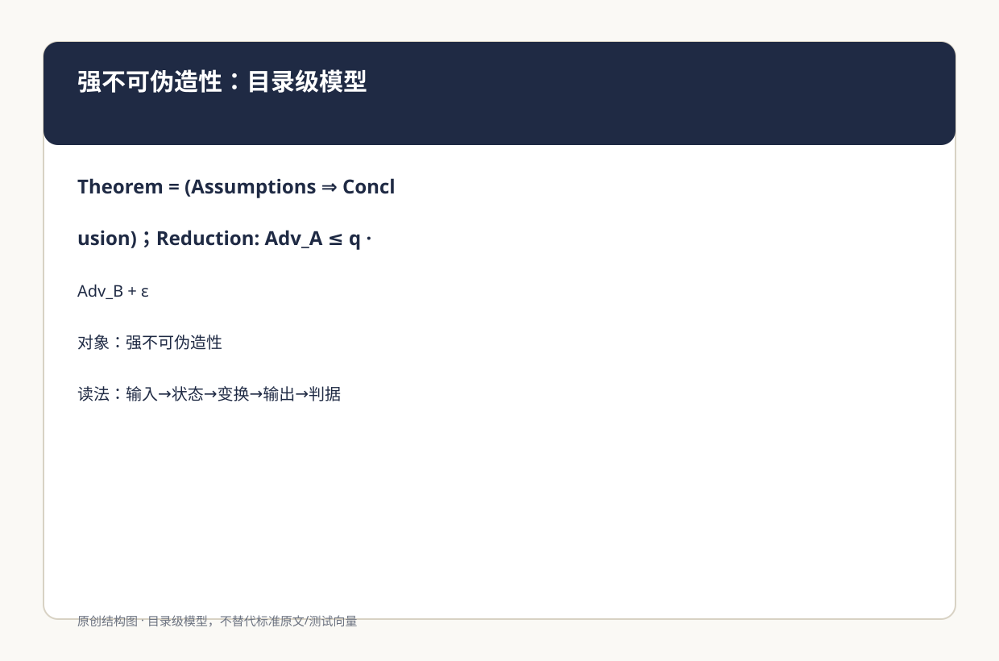

原理与机制
定理：强不可伪造（SUF-CMA Security）。### 游戏定义
签名方案由 Gen、Sign、Verify 组成。挑战者生成 (pk,sk)，把 pk 交给敌手 A，并允许 A 查询 Sign(sk,·)。设 Q 为预言机返回的 (m_i,σ_i) 集合。A 输出 (m*,σ*)。EUF-CMA：若 m* 未被查询过且 Verify(pk,m*,σ*)=1，则 A 获胜。SUF-CMA：若 (m*,σ*) ∉ Q 且 Verify(pk,m*,σ*)=1，则 A 获胜。也就是说，即使 m* 被查询过，只要给出一个不同的有效签名，也算伪造。优势 Adv^{SUF-CMA}_{SIG}(A)=Pr[A 获胜]；对所有 PPT A 可忽略时，方案是 SUF-CMA 安全的。### 为什么 Q 必须记录完整签名
如果 Q 只记录消息，敌手拿到 m 的签名 σ 后，只要输出 m 的另一个有效签名 σ′，就会被误判为“没有查询过 m”。SUF-CMA 的关键正是把 σ 与 σ′ 区分开：Q 中的元素是 (m,σ) 对，而不是消息集合。### 与 EUF-CMA 的关系
SUF-CMA ⇒ EUF-CMA：若敌手能为新消息伪造签名，它当然也违反 SUF-CMA。反过来不成立：存在 EUF-CMA 安全但可重随机化/可延展的签名方案。

为什么重要
EUF-CMA 只禁止“新消息”的伪造；它允许敌手拿到 m 的签名后，输出 m 的另一个有效签名。SUF-CMA 把这种“同一消息的签名变形”也算破坏。对签密、认证加密、群签名和某些 CCA 构造，签名的唯一性/不可变形是安全证明需要的性质。### 与确定性签名的关系
若 Sign 是确定性的且 Verify 只接受唯一编码，那么同一消息的不同有效签名不存在，SUF-CMA 与 EUF-CMA 等价。随机化签名不一定：ECDSA 的 (r,s) 与 (r,n-s) 都验证通过，说明未做规范化时它不是 SUF-CMA。### 对协议设计的含义
协议不能只检查“签名有效”，还要检查签名的规范化、重放保护和唯一编码。把 ECDSA 的高 s 变形当成“另一个签名”可能破坏去重、票据和签名聚合。
应用与实例
1.写出签名方案的概率算法与验证方程。2.定义预言机返回的完整 (m,σ) 集合 Q，而不是只记录消息。3.让敌手输出 (m*,σ*)；检查 Verify=1 且 (m*,σ*)∉Q。4.对随机化签名，检查是否存在可重随机化/可延展的变形；对确定性签名，检查验证是否接受多编码。5.需要 SUF-CMA 时，采用强不可伪造构造、规范化编码，或加签名唯一性检查。### 典型场景
签密、CCA 安全的混合加密、群签名、许可证/票据去重、区块链交易签名。

边界与攻击面
1.SUF-CMA 不防私钥泄露、侧信道或实现错误；它只是签名伪造的游戏。2.验证算法接受多编码时，数学上唯一的签名可能在协议层变成多个有效串。3.ECDSA 未规范化时存在 (r,n-s) 变形；一些部署用 low-s 规则限制，但这不是所有实现的默认。4.随机化签名方案可能 EUF-CMA 安全但可重随机化；必须单独证明 SUF-CMA。5.强不可伪造不保证匿名、不可链接或抗抵赖；这些是另外的安全目标。6.在 ROM/标准模型中的证明不能自动迁移到具体实现。SUF-CMA 是定义，不是某个算法的属性标签；说“某方案是 SUF-CMA”必须给出具体方案、验证规则和证明/假设。
历史与背景
Goldwasser、Micali 与 Rivest 在 1988 年给出自适应选择消息攻击下的存在性不可伪造定义，并建立签名安全性的层级。这个定义只要求敌手不能为“新消息”伪造签名。后来的签密与强签名研究把“同一消息的新签名”也纳入攻击目标，形成 SUF-CMA/sEUF-CMA。Boneh、Shen 与 Waters 在 2006 年给出基于 CDH 的强不可伪造构造，说明强安全不必依赖 Strong-RSA 或 Strong-DH 这类更强假设。### 今天的实现
EdDSA 等确定性签名天然接近强不可伪造；ECDSA 需要 low-s 规范化；RSA-PSS 等随机化方案要单独分析。协议设计者应把“签名编码唯一性”写进规范，而不是只依赖数学定义。
逐步示例与核验
形式模型与复算步骤
[\Pr[\mathrm{Bad}_A(\lambda)]\le \varepsilon(\lambda)]
强不可伪造的公开参数、密钥/随机数与消息；变量说明：Bad 为归约中定义的失败事件，ε 为可忽略函数。1.定义失败事件。2.构造归约把攻击者转成困难问题求解器。3.证明失败概率上界。边界：公式只覆盖已登记的参数与假设；参数取值、标准版本和实现细节仍以来源为准。
参考出处
- Wikipedia search entry for 强不可伪造. https://zh.wikipedia.org/w/index.php?search=%E5%BC%BA%E4%B8%8D%E5%8F%AF%E4%BC%AA%E9%80%A0
- Handbook of Applied Cryptography (Menezes, van Oorschot, Vanstone). https://www.cacr.math.uwaterloo.ca/hac/